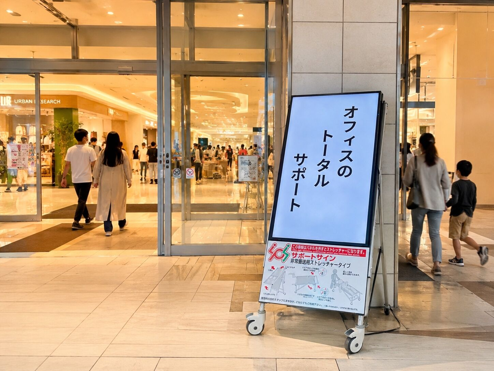
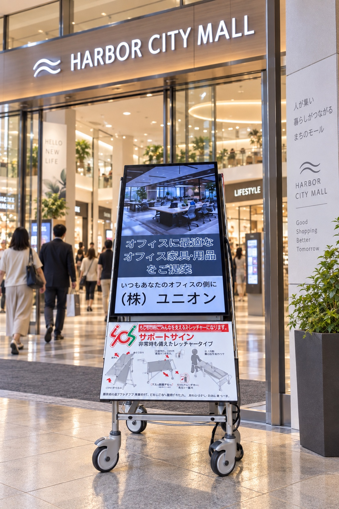
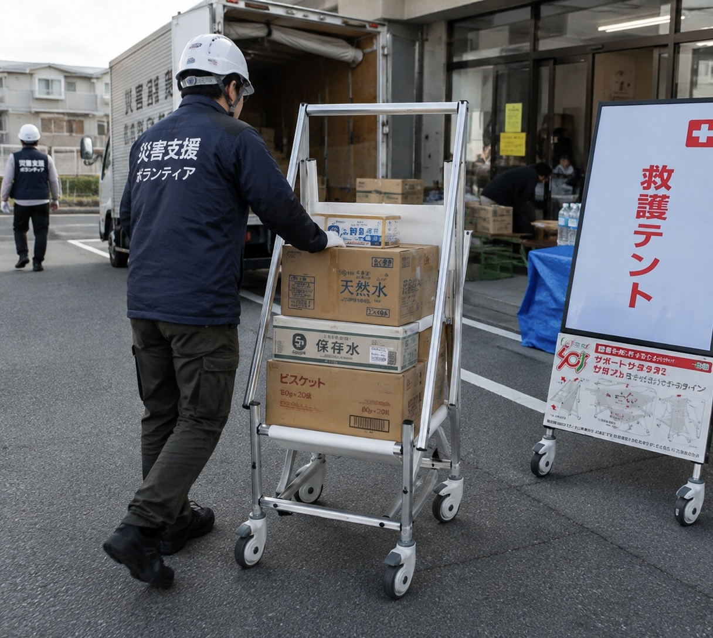
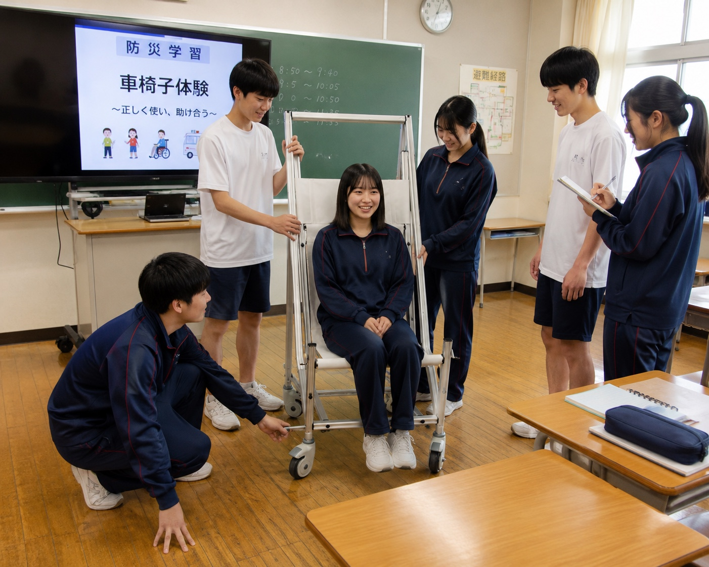

使う場所に
備えがある
倉庫の奥ではなくいつも人が行き交う場所へ日常的に目にする看板が緊急時の搬送を支える備えになります

人が集まる場所にある一台の看板
その役割は情報を伝えることだけではありません
デジタルサイネージサポートサインは
案内やお知らせを映す電子看板と
緊急時の搬送用具を組み合わせた製品です
普段から目に触れ日々使われること
それがいざという時の備えにつながります
伝えることも支えることも
毎日の景色の中で
デジタルサイネージサポートサインの使い方・変形手順を見る ↗

PRODUCT / 活用イメージ日常の情報発信と緊急時の物資運搬の使用例をご覧いただけます
施設案内掲示板自社の取り組み広告動画や画像で必要な情報をわかりやすく届けます
活用イメージ：大型ショッピングモールでの情報発信
搬送時の形態・操作方法は製品タイプにより異なります
製品の違いを質問する ↗安全対策に日常の価値を
情報発信にもしもの役割を
一台から施設の備えを考えます
倉庫の奥ではなくいつも人が行き交う場所へ日常的に目にする看板が緊急時の搬送を支える備えになります
施設の安全対策や避難先企業の取り組みを画面で発信来訪者や従業員に日々の活動を届けられます
施設案内から安全啓発まで動画と画像で表現紙の掲示だけでは伝えきれない内容にも活用できます
運用環境に合わせて放映方法を選択ネットワーク配信に対応した構成なら遠隔での表示変更も可能です
学校では防災学習や搬送用具の体験にも生徒自身が伝える内容を考えることで防災を身近にするきっかけに
防災用品の「もしも」の役割と
電子看板の「いつも」の役割
その二つをひとつの設置場所に
| 役割 | 一般的な電子看板 | 搬送用具 | サポートサイン デジタルサイネージ版 |
|---|---|---|---|
| 日常の情報発信 | 動画・画像を表示 | 搬送用途が中心 | 動画・画像を表示 |
| 緊急時の搬送 | 搬送用途なし | 搬送を補助 | タイプに応じた形態で補助 |
| 日常の置き場所 | 人の目に触れる場所 | 施設の運用により異なる | 情報発信をする場所に設置 |
一般的な用途の整理です個別製品の仕様や施設の運用によって異なります

活用イメージ / 公共施設地域のお知らせともしもの備えを同じ場所に
施設案内や地域のお知らせを発信緊急時には来訪者の移動や物資運搬の補助に活用できます
行事の案内や生徒の活動を紹介防災学習や車いす体験など日常の学びにもつながります
安全目標連絡事項企業の取り組みを共有従業員や来訪者が集まる場所で搬送への備えも兼ねます
利用案内や地域の情報を発信人の往来がある十分な設置スペースを確保できる場所への導入をご相談いただけます
イベント案内や安全啓発の表示に救護拠点の案内と搬送の補助など施設の運用に合わせた活用を考えます
画像は活用イメージです導入実績を示すものではありません設置は通路幅・環境・運用を確認のうえご提案します

SAFETY, IN EVERYDAY LIFE.
使い方から情報発信の運用まで
株式会社ユニオンが施設に合った
活用方法を一緒に考えます
設置場所や使い方をご案内避難訓練での活用についてもご相談ください
動画・画像の制作から放映方法まで日々の情報発信をサポートします
使用状況に応じた確認や交換時期のご案内など導入後の管理を支援します
購買管理によるコストカット支援もご相談可能安全対策に充てる予算づくりを一緒に考えます
よくいただくご質問
もちろんです設置できる場所使い方費用感など気になることからお気軽にご相談ください
ストレッチャータイプと車いすタイプがあり緊急時の形態や操作は製品タイプにより異なります用途に合うタイプをご案内します
43〜55インチの範囲でメーカーや機種をご相談いただけます適合する構成と放映方法を設置環境に合わせてご案内します
設置環境と機器の仕様に応じた確認が必要です直射日光や強風が長時間当たる場所は避け通路の安全やスペースを確保できる場所をご相談ください
医療機器ではありません救護活動を補助する搬送用具です使用方法を確認し施設の救護・避難計画に合わせてご活用ください
使い方から動画や画像の制作放映までご相談いただけますご希望の運用に合わせてサポート内容をご提案します
「うちの施設にも置ける？」
「どんな仕組み？」「費用はどのくらい？」
検討前のご質問も歓迎します
お問い合わせ